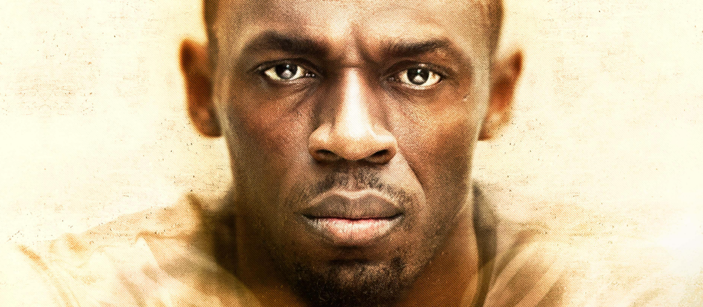

Documental
I Am Bolt
Publicado el 10 de Noviembre de 2025 · Por Micaela Nowak

"I Am Bolt" es un documental biográfico de 2016 sobre el legendario atleta jamaicano Usain Bolt, el hombre más rápido del mundo. La película ofrece una mirada íntima a su vida, mostrando su riguroso entrenamiento, su carisma y el desarrollo de su carrera, incluyendo sus victorias olímpicas. También incluye entrevistas con otras figuras deportivas como Neymar y Serena Williams, y explora tanto sus triunfos como las dificultades, como las lesiones.
Reparto
- Usain Bolt
- Familia, entrenadores y compañeros de selección
¿A quién se la recomiendo?
A amantes del deporte, la superación y las historias de trabajo duro detrás del talento.
Lo que dijo la gente sobre esta película
“El documental me motivó muchísimo. Ver cuánto sacrificio hubo detrás de ese atleta me dio fuerza para no rendirme.”
“No es solo sobre éxitos y medallas: muestra también el trabajo duro, la presión y lo que hay detrás del ‘ser rápido’.”
“Ver a alguien tan famoso tener momentos de duda y soñar tan alto me hace pensar que cualquiera puede intentarlo. Inspirador.”